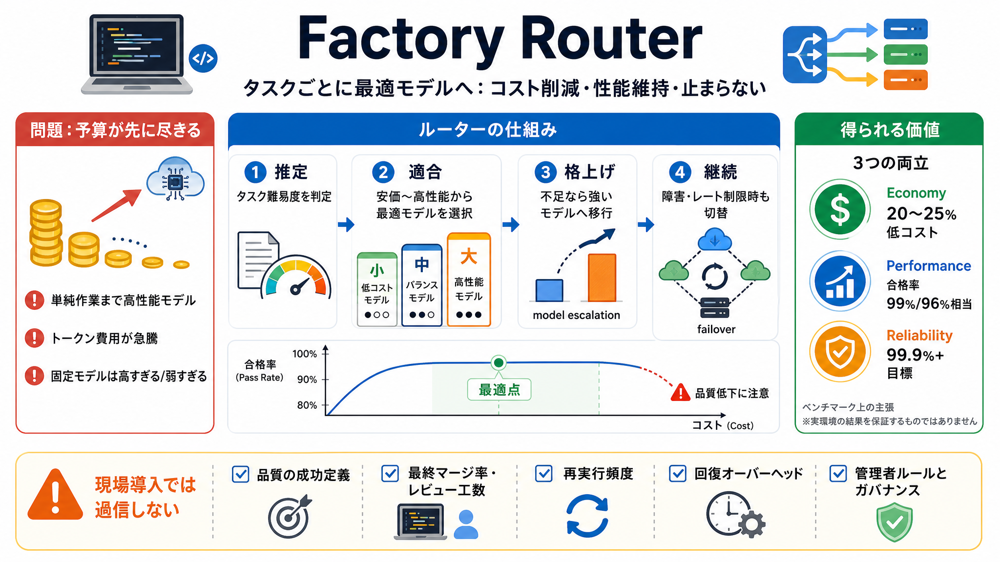

Terminal-Bench 2: 99% of Opus 4.7's pass rate at 20% lower cost
Factory Router delivers frontier performance at lower cost. Benchmarks: • Terminal-Bench 2: 99% of Opus 4.7's pass rate …

AIコーディング最適化
Factory Routerは、AI開発における「モデル選択」と「コスト（トークン課金）」のトレードオフを自動最適化するための仕組みです。
タスク難易度に応じてモデルを切り替え、さらに止まらない継続性も狙います。
予算が先に尽きる
フロンティア級モデルほど高額です。
それなのに「性能低下の不安」を避けるため、単純・定型作業まで高性能ルートに乗りがちで、成果が伸びないのに支出だけ増えます。
モデル選択の最適化がない（人手・慣性で最上位へ寄る）
トークン費用が急騰／予算枯渇（利用量だけでなく意思決定の問題）
同じ作業を安く
ルーターの基本は、(1) タスクごとに最適なモデルを自動選択し、(2) 失敗・不足が出たらより能力の高いモデルへ移行して品質を担保することです。
難易度に合わせてモデルを選ぶ（最安優先ではない）
完了できない場合は“より強いモデル”へルーティングし直す
止まらせない
コスト最適化だけではなく、プロバイダ障害・レート制限・容量変動などが起きてもセッションを継続する設計が入っています。
99.9%+のリクエスト信頼性を目標
複数プロバイダで切替（プロバイダ劣化に追従）
専用TPM・可用性確保などで継続
組織の運用に合わせる
管理者がルーティング可否やルールを制御でき、別途の複雑なコントロールプレーンを作らずにガバナンスを維持できます。
モデル可用性とルーティング適格性を制御
統制の追加負担を下げる（運用に乗せやすい）
ベンチマークの根拠
ベンチマークでは「合格率を保ちつつ」セッション当たりのコストを下げられる、という主張が示されています。
Claude Opus 4.7の合格率99%相当／セッション当たり20%低コスト
合格率96%相当／25%低コスト
平坦区間を狙う
コストを下げると性能が直線的に落ちるわけではなく、下がり始める“曲がり”の手前を狙う設計だと説明されています。
安価モデルへ寄せて“利益”が出る領域を選ぶ
曲がりを越えると合格率が大きく崩れる
一律ではなく最適点（セッション単位）を取りに行く
処理の流れ
Factory Routerは、同一セッション内でタスクの状況に応じてモデルを選び、必要なら格上げ・切替で前進します。
タスク難易度を前提に最適モデルを自動選択
完了できない／不足があればより能力の高いモデルへ移行
プロバイダ障害・レート制限等でもセッション継続
管理者がルール・可用性条件を反映
固定モデルの限界
固定モデル運用は「高すぎる」か「弱すぎる」へ振れやすく、性能とコストの中間点を逃すことがあります。
常に同じモデルで判断 → タスク差を吸収できない
タスクごと最適化＋失敗時格上げ＋切替 → 継続性も両立
提案の価値
目指すのは「コスト削減」「性能維持」「信頼性（止まらない）」の同時達成です。ベンチマーク数値はその方向性を支持しています。
セッション当たり20〜25%低コスト（主張）
合格率99%/96%相当を狙う（主張）
99.9%+の信頼性を目標（継続性）
現場での検証
ベンチマークの合格率は指標の一部にすぎません。導入では、現場KPI（最終マージ率、レビュー工数、再実行頻度など）と信頼性の定義範囲を確認する必要があります。
“仕様を満たさない”品質低下の扱い・成功定義の詳細
ルーティングガイダンス設計が不十分だと期待値を下回る可能性
結論
Factory Routerは「タスク単位で最適点へ寄せ、失敗時に格上げし、切替で継続する」という方向性が筋が良い提案です。
ただし現場導入では、品質・信頼性・運用ルールを実ワークロードで検証して期待しすぎない姿勢が重要です。
推奨アクション：実データで 品質（成功定義） と コスト と 回復オーバーヘッド を測る
Factory Router delivers frontier performance at lower cost. Benchmarks: • Terminal-Bench 2: 99% of Opus 4.7's pass rate …
* [Key observations of reported benchmarks](https://www.vellum.ai/blog/claude-opus-4-7-benchmarks-explained#key-observ…
Claude Opus 4.7 just dropped, but behind every headline lies a deeper story. From a bonanza of benchmarks, to seeing the…
Claude Opus 4.7 vs Qwen 3.6 compared on benchmarks, pricing, deployment, and agentic performance. Pick the right model (…
# Anthropic: Claude Opus 4. Claude Opus 4 is benchmarked as the world’s best coding model, at time of release, bringing …